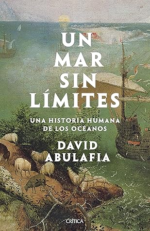

Un mar sin límites: Una historia humana de los océanos
Reseña por Jorge I. Zuluaga

Ver reseña en GoodReads (necesita cuenta)
Basto como la mar océana.
La más extensa y exhaustiva lección de geografía e Historia que he recibido hasta ahora.
Supe de "Un mar sin límites" por un amigo de los libros, Santiago Osorio, que lo descubrió, según recuerdo me contó en su momento, por una referencia hallada en otro gran libro, "Mediterráneo" de Julius Norwich; libro que, gracias a la recomendación de Santiago, yace ahora también en mi interminable lista de libros por leer.
No puedo estar más agradecido con Santiago por conducirme a esta lectura monumental, pero también, por introducirme, a través de su recomendación, en los escritos de su autor, David Abulafia, que se suma ahora a esa otra lista, no mucho menor que la de libros por leer, de mis autores preferidos.
No había emprendido hacía muchos meses la lectura de un ensayo divulgativo tan extenso como este. Si bien he leído en el entre tanto más de una novela con de cerca de 1 millar de páginas, nada se comparaba hasta ahora con la lectura de eso otro monumental ensayo histórico que no puede faltar en la biblioteca de quién se precie de buen o buena lectora - así no lo haya leído todavía. Me refiero, por supuesto, al excepcional libro "Ideas" de Peter Watson, que fue en su momento mi iniciación en ese "deporte extremo" de leer libros de ensayo de más de 1.000 páginas. Y es que no es la extensión lo que hace a estos libros excepcionales, ni a los lectores y lectoras que nos obsesionamos con leerlos en su totalidad unos bichos raros; es la densidad de datos históricos, biográficos y geográficos que contienen, densidad que resulta a la larga sencillamente apabullante.
Extensos y densos pero eso si ¡libros muy bien escritos! ¡libros maravillosos!.
Apabullante: ese sería otro adjetivo adecuado para describir el inmenso proyecto que desarrolla Abulafia en "Un mar sin límites". Como seguro habrán leído en la descripción (no me gustan las reseñas que repiten lo que se puede leer en una contraportada) "Un mar sin límites" hace un recorrido por más de 170.000 años y, con toda seguridad - el autor no los contabiliza -, por más de 1 millón de kilómetros (que es solo la longitud conjunta de todas las costas de los continentes e islas de la Tierra); el increíble periplo histórico y espacial de la humanidad alrededor de los océanos y mares de la Tierra.
El resultado no puede ser más monumental. Abulafia nos conduce con maestría ensayística y rigor académico por todas las costas y mares de la Tierra, desde las remotas islas en la mitad del inmenso Pacífico o las ricas islas en medio del Atlántico, pasando por las costas de Africa, el sur y oriente de Asia, América y Europa, en las que se desarrollaron algunos de los eventos más importantes de la Historia de la humanidad, hasta llegar incluso a las accidentadas y remotas costas que comunican a Asia con América, a las heladas Tierras de Groenlandia o a los laberintos de mar y Tierra del ártico canadiense.
Ningún lugar en las costas de los océanos de la Tierra parece escapar a este inmenso viaje. De allí mi afirmación de que "Un mar sin límites" es la más grande lección de geografía a la que se pueda aspirar a través de un único libro de ensayo.
Me complació muchísimo conocer con mucho detalles a través de los a veces interminables, más no insoportables, capítulos dedicados a esta parte de la geografía de los océanos, las regiones del suroriente de Asia: indonesia, indochina, las costas del mar meridional de la China o el archipiélago de Filipinas y de Japón. Para quiénes vivimos tan lejos de esos lugares, pero que al mismo tiempo no somos ajenos a la importancia que muchos de ellos han tenido en la historia pasada de la humanidad, pero más importante, el papel que están teniendo en la historia presente, conocer al fin la organización de esas geografías remotas es simplemente revelador.
Para mí, después de leer "Un mar sin límites", lugares como Singapur, Borneo, Filipinas, Melaka, Indonesia, Guangzhou (Cantón), Nagasaki, Taiwan, Java, Shanghai, Sumatra, Sri Lanka, lugares que están en el imaginario de la mayoría de todo los humanos de este lado del planeta, bien sea por referencias turísticas o razones sociopolíticas, han dejado de ser de repente para mí sitios exóticos, sitios que solo existen por allá al otro lado del mundo, en algún lugar de oriente, para convertirse en lugares con una ubicación específica en un mapa (¡los mapas abundan en el libro y son indispensables!) con una larga Historia llena de eventos fundamentales para la Historia del resto del planeta. Hoy, puedo señalar en un mapa dónde esta cualquiera de esos lugares y aunque esto parezca una hazaña infantil, es mucho más de lo que puede cualquiera recordar de todos los años de lecciones de historia y geografía en el colegio.
Naturalmente esto no es lo más importante que deja la lectura de "Un mar sin límites". El mensaje central, sea que haya sido el propósito o no del autor, es mucho más impresionante: no hay una Historia de occidente, la que nos han enseñado a casi todos y que conocemos con lujo de detalles; tampoco una historia de oriente, lejana y desconocida para la mayoría; no existe, aislada, una prehistoria del pacífico o de la América precolombina. Gracias a los océanos, que han actuado a lo largo de más de 100.000 años de navegación como el sistema circulatorio de las ideas y la cultura de la humanidad, existe una sola Historia. No hay un solo evento que haya marcado la vida de las generaciones de humanos del presente, y con ellas las de toda la vida de la Tierra, dígase por caso el comercio y el consumo de té - para citar tan solo un ejemplo de los muchos en los que ahonda Abulafia, que haya ocurrido sin la concatenación de cientos o miles de eventos cruciales acaecidos en las costas, mares e islas de todo el planeta; desde el "Mediterráneo de Asia," el mar de la China Meridional, del que salieron los primeros cargamentos de esta bendita planta, pasando por el océano indico - si en la Europa del imperio Romano, todos los caminos conducían a Roma, en el mismo tiempo de ese impero, pero también mucho antes y después, todos los "caminos" pasaban por el océano índico - recorriendo las costas occidentales de Africa, plagadas de portugueses esclavistas, atravesando el atlántico o el pacífico en Carabelas españolas, todo el mundo tuvo que ver.
Una relectura de la Historia como un relato naturalmente interconectado, eso me deja pues también este extraordinario recorrido que es "Un mar sin límites".
Hojeando el libro para escribir esta reseña, que me tomo semanas empezar por encontrarme ante la desconsoladora pregunta de por dónde empezar a reseñar 170.000 años de historia y 1 millón de kilómetros compactados en 1300 páginas de buena literatura divulgativa, historia que se supone yo debo reseñar en unos 10.000 caracteres sin aburrir a mi yo futuro o a los lectores que siguen mis reseñas - por una razón que todavía desconozco; hojeando el libro, digo, me encontré con cosas que había leído y no recordaba. Historias increíbles que ahora me place mucho conocer. En una historia sobre los humanos en el mar, por ejemplo, no podrían quedar por fuera los Vikingos ¿o sí?. Leyendo a Abulafia descubrí que la historia de los navegantes del norte de Europa, del Báltico, del mar del norte, del atlántico norte, del ártico, todos lugares muy diferentes para mi sorpresa, es más compleja de lo que pensaba y trasciende a los Vikingos, esas tribus exploradoras a las que todos reducimos la historia del norte de Europa. Ni idea tenía yo de la existencia de la liga Hanseática y de los logros de comercio y navegación que sentaron las bases para algunos de los avances sociales y económicos más importantes de Europa, cuya Historia, querámoslo o no, para bien o para mal, marco el devenir de todo el mundo. Los Vikingos son solo la punta de un "iceberg" histórico que se pone en evidencia en las páginas de "Un mar sin límites".
La Historia, ampliada y enriquecida por Abulafia, del (supuesto) descubrimiento de América por Españoles, Portugueses, Ingleses y Franceses en los 1500 y su posterior (y brutal) colonización, resultó también para mí increíblemente más rica y excitante de lo que nunca fue cuando me la contaron en el colegio, incluso en otros libros dedicados al tema.
El papel clave de las islas del Caribe, Cuba, Jamaica, La Española, Bahamas, las Antillas holandesas, incluso la diminuta Barbados, en la compleja geopolítica de aquel tiempo, islas que en muchas ocasiones se nos presentan simplemente como el puente entre dos mundos, el viejo y el nuevo continente (que de viejo y de nuevo no tienen realmente nada, para viejas las islas del pacífico y para nueva la Antártida) y no como el verdadero corazón de la Historia del encuentro entre Europa y América. O mejor, del encuentro de Europa con Europa, teniendo a los pueblos originales de América como testigos mudos y esclavizados, en las tierras ricas de América. "Fue el Caribe estúpido", dirían por ahí. El papel de las costas del pacífico en ese período fue también para mí una sorpresa. O más bien se me revelo como una ofensa de mi educación ¿por qué todo las historias que me contaron de aquel período comenzaban en Sevilla y terminaban en Cartagena de Indias, en el Darien, en Yucatán o en la Florida?.
Leer "Un mar sin límites" no es un proyecto sencillo.
Para una persona como yo obsesionada con llegar al final de los libros (hay mucho para leer y muy poco tiempo) puede tomar entre uno y dos meses de lecturas relativamente continua. Para aquellas personas que no soporten leer una infinidad de detalles sobre mundos remotos en el espacio y en el tiempo, detalles sin embargo que a la larga resultan trascendentales (para citar un ejemplo déjenme mencionar los enfrentamientos entre los reyes de Java e Indonesia durante la que llamamos la edad media, una lucha de poderes que a la larga fueron trascendentales para los eventos que se desarrollaron alrededor de esas islas y que determinaron el comercio de productos exóticos - especias, té, porcelana - hacia Europa, pero también hacia China, con los impactos trascendentales en la historia que todos conocemos); para quiénes no soporten leer esos detalles, recorrer todas las páginas de este libro tal vez llegue a ser imposible. La recompensa sin embargo puede valer el esfuerzo. Como sucede con casi todos los libros, al final no recordaras casi nada (¡es casi absurdo aspirar a tanto!) pero es claro que no se es la misma persona después de leer un texto como "Un mar sin límites". O mejor, el mundo y la Historia ya no será la misma.
Si no está, pónganlo ya en su lista.